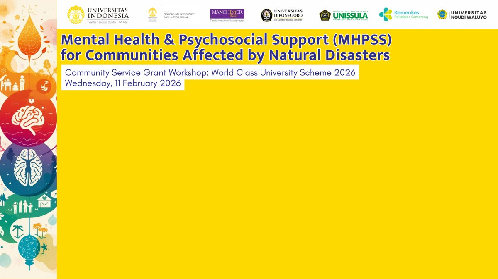
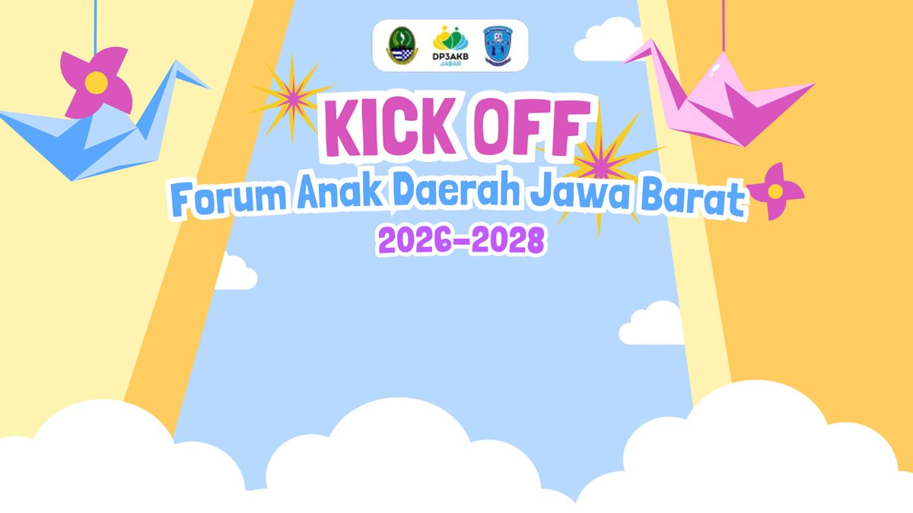
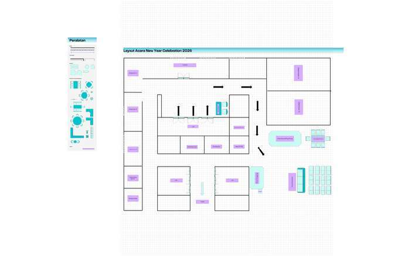
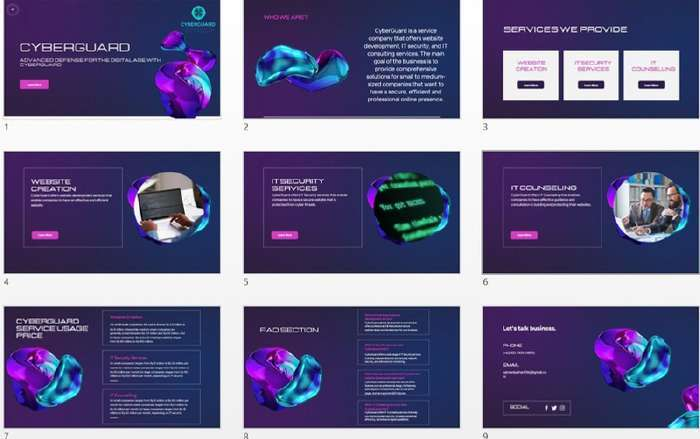

Salman BazherData Analyst • Business Intelligence📍 Depok, West Java • Jakarta Business School
Data Integrity99.4%
Accuracy & Verification
Credentials10+
AI, Cyber & DevOps
Records Analyzed50K+
Data Wrangling & EDA
About Me
Analytical Mindset, Business-Driven Approach
Menggabungkan kecermatan data dengan pemahaman strategi bisnis untuk menciptakan dampak nyata.
Profesional Data Analyst
Saya adalah seorang Data Analyst yang berfokus pada pengolahan data, analisis data, visualisasi data, dan menghasilkan insight yang dapat membantu pengambilan keputusan bisnis. Saya memiliki ketertarikan kuat dalam mengubah data mentah menjadi informasi yang terstruktur, mudah dipahami, dan bernilai strategis.
Dengan latar belakang pendidikan Sarjana Digital Business di Jakarta Business School serta fondasi teknis komputer dan jaringan, saya menjembatani dunia operasional teknis dengan kebutuhan bisnis modern seperti e-commerce, digital marketing, dan analisis pasar finansial.
Lokasi:Depok, Jawa Barat, Indonesia
Spesialisasi:EDA, Business Intelligence, Data Storytelling
Bahasa:Bahasa Indonesia (Native), English (Working)
Data Cleaning & Preparation
Menangani missing values, outlier, formatting data yang tidak seragam, dan memastikan integritas data siap digunakan untuk analisis presisi.
Exploratory Data Analysis (EDA)
Mengidentifikasi pola tersembunyi, tren periodik, korelasi antar variabel, serta anomali perilaku pasar menggunakan Python dan SQL.
Data Visualization
Membangun dashboard interaktif yang intuitif di Power BI, Tableau, dan Excel yang memudahkan stakeholder membaca metrik penting secara cepat.
Insight Generation
Menerjemahkan temuan statistik menjadi rekomendasi bisnis yang konkret, dapat ditindaklanjuti, dan berorientasi pada efisiensi serta profitabilitas.
Competencies
Technical Skills & Toolkit
Daftar keterampilan dan perangkat analitis yang digunakan untuk mengolah data secara terstruktur dan efisien.
1. Data Analysis
Data CleaningCore
Exploratory Data Analysis (EDA)Core
Statistical AnalysisProficient
Data InterpretationApplied
2. Programming
PythonPandas, NumPy, Matplotlib
SQLQueries, Joins, Aggregation
JavaScriptVanilla, Data Scripts
3. Spreadsheet
Microsoft ExcelPivot Table, VLOOKUP/XLOOKUP
Google SheetsFormulas & Collaboration
4. Visualization & BI
Power BIInteractive Dashboards
TableauVisual Analytics
Data StorytellingExecutive Reporting
5. Tools & Environment
Git & GitHubVersion Control
Jupyter NotebookInteractive Environment
FigmaDashboard Prototyping
Portfolio
Featured Data Projects
Studi kasus dan proyek simulasi analitik yang mendemonstrasikan proses end-to-end dari data wrangling hingga penarikan insight bisnis.
Sample ProjectData Analysis • Sales
Sales Performance Analysis
Analisis komprehensif terhadap performa penjualan multiregional untuk mengidentifikasi produk berkinerja tinggi dan musim belanja puncak.
Tujuan Analisis:
Mengoptimalkan alokasi stok produk dan mengidentifikasi tren musiman guna memaksimalkan pendapatan kuartalan.
Key Insight:
Kategori produk teknologi menyumbang 46% total revenue, dengan lonjakan konversi tertinggi pada akhir bulan di regional barat.
PythonPandasExcelMatplotlib
Sample ProjectData Science • Segmentation
Customer Segmentation Analysis
Segmentasi pelanggan berbasis model RFM (Recency, Frequency, Monetary) untuk membantu tim pemasaran merancang promosi yang terpersonalisasi.
Tujuan Analisis:
Mengelompokkan 5.000+ data pelanggan ke dalam klaster loyal, berisiko churn, dan pembeli bernilai tinggi (VIP).
Key Insight:
18% kelompok loyal menghasilkan 58% keuntungan kumulatif. Ditemukan potensi reaktivasi sebesar 12% pada segmen 'At-Risk'.
PythonScikit-LearnRFM ModelSeaborn
Sample ProjectBusiness Intelligence • Dashboard
E-commerce Executive Dashboard
Desain dashboard BI interaktif yang memonitor metrik operasional harian: rasio keranjang terbengkalai, status pengiriman, dan kepuasan pelanggan.
Tujuan Analisis:
Menyajikan Single Source of Truth bagi manajer operasional toko online untuk mempercepat pemantauan SLA pesanan.
Key Insight:
Keterlambatan pengiriman pada ekspedisi pihak ketiga memicu penurunan NPS sebesar 22%, berhasil dideteksi dalam waktu nyata.
Power BISQLDAXData Modeling
Sample ProjectFinance • Quantitative Analysis
Financial Data Analysis
Eksplorasi volatilitas harga aset dan analisis risiko kuantitatif pada instrumen pasar (Forex & Komoditas) berbasis time-series.
Tujuan Analisis:
Mengukur Maximum Drawdown, Risk-Reward Ratio, dan volatilitas harian untuk mendukung perumusan strategi manajemen risiko.
Key Insight:
Filter volatilitas berbasis Moving Average berhasil mereduksi drawdown strategi hingga 31% selama periode likuiditas tinggi.
PythonTime SeriesExcel FinancialStatistics
Career History
Relevant Experience & Practical Work
Pengalaman profesional dan peran organisasi dalam pengelolaan sistem, administrasi data, dan koordinasi tim.
Desember 2022 – Januari 2023Internship
IT Support Intern
Department of Communication and Informatics (Diskominfo)
Mengelola dan memelihara infrastruktur jaringan komputer lokal (LAN) agar operasional instansi berjalan lancar tanpa kendala.
Melakukan instalasi, konfigurasi, dan pembaruan sistem operasi serta aplikasi perkantoran pada perangkat kerja staf.
Menangani troubleshooting harian perangkat keras maupun perangkat lunak, serta memberikan dukungan teknis sigap kepada pengguna.
Fondasi akademis di bidang Bisnis Digital dan Teknik Jaringan Komputer yang menopang pemikiran analitis.
September 2023 – Sekarang (Active Undergraduate)
Bachelor's Degree in Digital Business (S1 Bisnis Digital)
Jakarta Business School
Fokus Studi: Business Analytics, Digital Marketing, FinTech, E-Commerce, dan Entrepreneurship.
Relevansi dengan Analisis Data:
Mempelajari metode kuantitatif pengambilan keputusan, metrik konversi e-commerce, evaluasi model bisnis, serta interpretasi tren pasar digital yang menjadi landasan kuat untuk analisis business intelligence berorientasi profit.
Mei 2020 – Mei 2023
Vocational High School in Computer and Network Engineering
Tiara Nusa Vocational High School (SMK Tiara Nusa)
Fokus Studi: Perakitan komputer, konfigurasi jaringan data (LAN/WAN), sistem operasi, dan troubleshooting hardware/software.
Relevansi dengan Analisis Data:
Membentuk logika pemecahan masalah (systematic troubleshooting), pemahaman arsitektur sistem komputasi, serta disiplin dalam integritas data teknis.
Credentials
Professional Certifications
Sertifikasi terverifikasi dalam Artificial Intelligence, Cybersecurity, dan DevOps.
2025
Google AI Essentials
Coursera • Google
Verified Credential
2025
Responsible Use of AI
Coursera
Verified Credential
2025
Maximize Productivity With AI Tools
Coursera
Verified Credential
2025
Cyber Security Fundamentals
Coursera
Verified Credential
2025
Discover the Art of Creating Prompt
Coursera
Verified Credential
2025
Introduction to AI Certificate
Coursera
Verified Credential
2025
Cybersecurity Fundamentals
Digitalent Komdigi (Kominfo)
Verified Credential
2025
Intermediate Cybersecurity
Digitalent Komdigi (Kominfo)
Verified Credential
2023
DevOps Course Fundamentals
Dicoding Academy
Verified Credential
2025
Final Courses & Certificate – Cybersecurity
Digitalent Komdigi (Kominfo)
Verified Credential
Activity & Practical Work
Photo Gallery & Activity Documentation
Dokumentasi visual kegiatan akademis di Jakarta Business School, kepemimpinan organisasi, serta riset studi kasus analitik sesuai profil dan rekam jejak CV.

Akademik • Workshop
Workshop World Class University
Jakarta Business School

Akademik • Forum Digital
Kick Off Forum Akademia Digital
Digital Business Initiative
Riset • Supply Chain
Supply Network Design Analysis
E-Commerce Ecosystem Case Study
Riset • AI & Analytics
AI & MIS Sustainable Packaging
Advanced Research Paper 2025

Organisasi • Operasional
Event Operations & Flow Design
Tinus Esport & SMK Tiara Nusa

Teknikal • Cyber & IT
CyberGuard Strategy Framework
IT Security & Networking System
Profil • Data Analyst
Salman Bazher
Data Visualization & BI Professional
Get in Touch
Let's Discuss Your Data Needs
Terbuka untuk peluang kerja sama profesional, proyek freelance analitik, maupun konsultasi Business Intelligence.
Informasi Kontak
Jangan ragu untuk menghubungi saya melalui kontak langsung berikut atau kirimkan pesan melalui form.